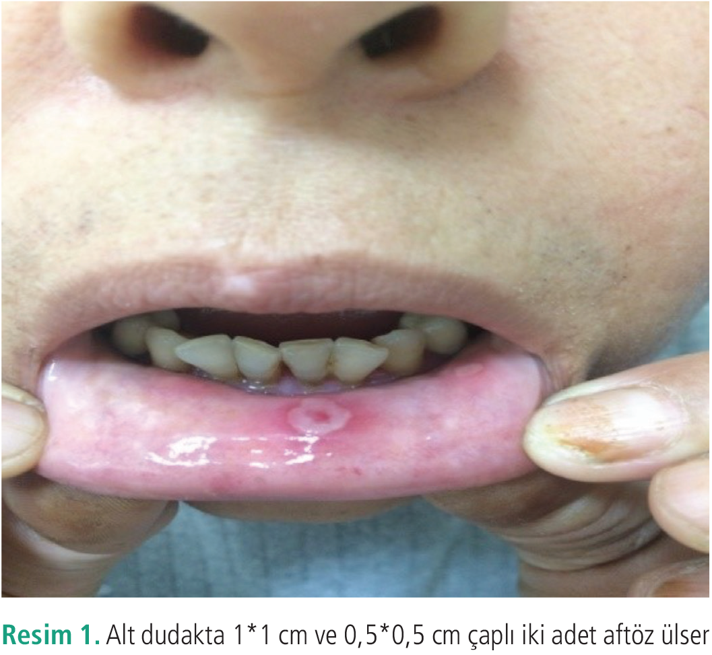
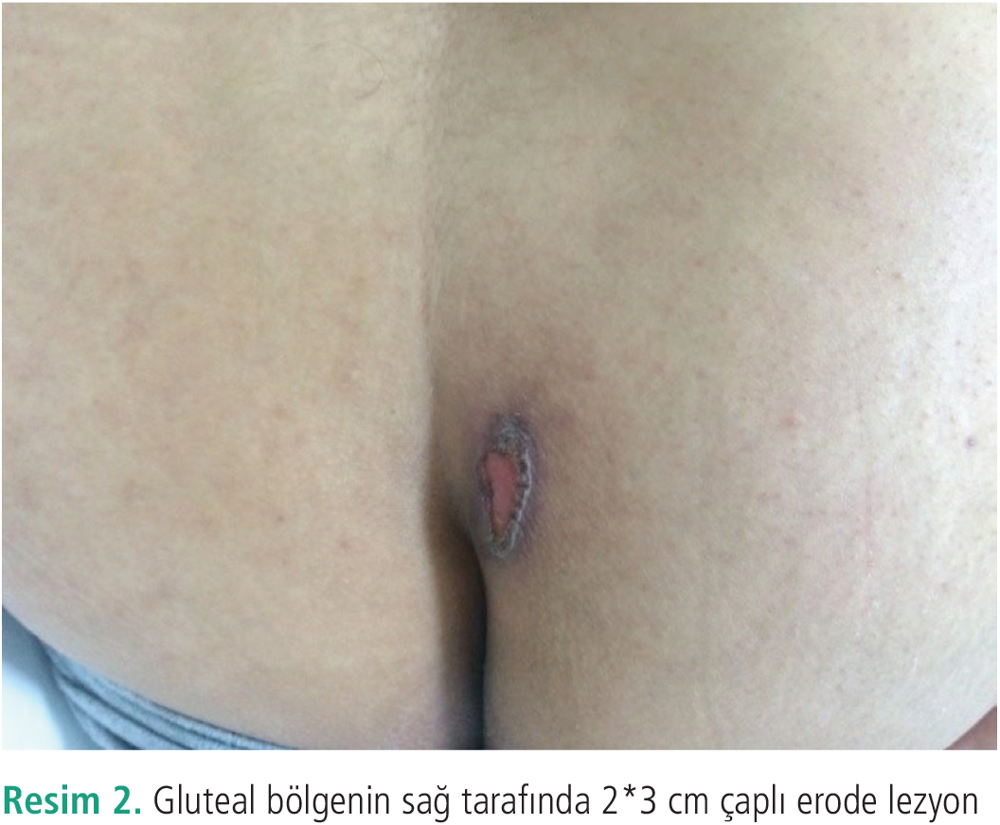
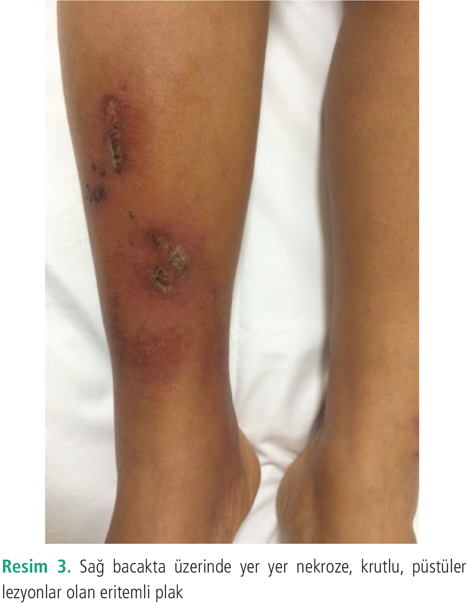
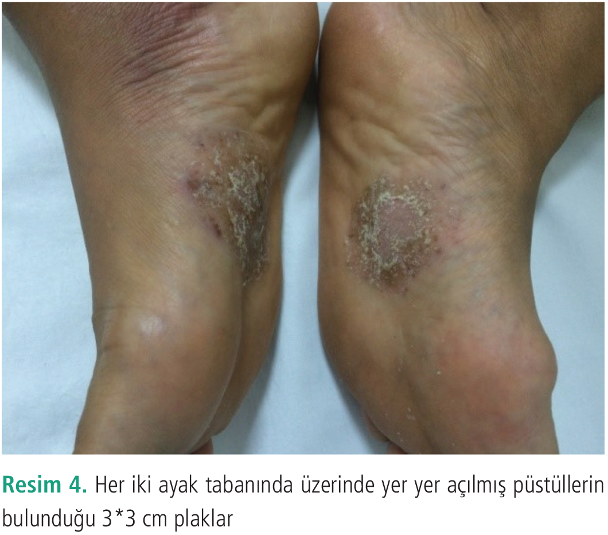

Olgu Sunumu
Ayak Tabanı Lezyonları için Eczacı Önerisiyle Metotreksat Kullanımı Sonrası Gelişen Metotreksat İntoksikasyon Olgusu
1 Sağlık Bilimleri Üniversitesi, Dışkapı Yıldırım Beyazıt Eğitim ve Araştırma Hastanesi, Dermatoloji Kliniği, Ankara, Türkiye
Anahtar Kelimeler: İlaç reaksiyonlarıintoksikasyonmetotreksat
Keywords: Drug reactionsintoxicationmethotrexate
Geliş: 03.08.2019Kabul: 23.08.2019Yayın: 24.09.2020
s. 99-102
Özet
ÖZET
Metotreksat psoriasis tedavisinde kullanılan bir ilaçtır. Psoriasis tedavisinde haftalık düşük dozlarda kullanılmasına rağmen renal yetmezlik, folik asit eksikliği, ileri yaş gibi risk faktörleri varlığı veya ilacın yanlışlıkla fazla kullanılması gibi nedenlerden dolayı metotreksat toksisitesiyle karşılaşabilmekteyiz. Biz burada 48 yaşında kadın hastada her iki ayak tabanındaki lezyonlar için eczacı tarafından önerilen metotreksat tabletlerini kullanması sonrası gelişen metotreksat intoksikasyonunu sunuyoruz. Deri ve mukozal ülserasyonları olan hastanın tarafımıza başvurmadan bir hafta önce ilacı bırakmış olması nedeniyle hafif şiddetli seyreden olguda sadece folik asit replasmanıyla lezyonlarının gerileme göstermesi dikkat çekiciydi. Aynı zamanda metotreksat gibi yüksek riskli ilaçların reçetesiz satışının yapılmaması gerekliliğini de vurgulamak istedik.
Tam Metin
Giriş
Metotreksat 1960 yıllarından beri otoimmün hastalıklar ve enflamatuvar deri hastalıklarında kullanılan immünosüpresif bir ilaçtır (1). Dermatolojide orta -ciddi plak psoriasis, püstüler psoriasis ve eritrodermik psoriasis gibi psoriasisin farklı tiplerinde de sıklıkla tercih edilir (1). Genellikle tıpta kanser kemoterapisinde yüksek dozlarda kullanılırken psoriasis tedavisinde haftalık düşük dozlarda (5-22,5 mg) (2) 12 saatte bir bölünmüş olarak kullanılır.Metotreksat toksisitesi genellikle ilacın yanlışlıkla fazla kullanımı sonucu karşımıza çıkabilmektedir (3). Bu da genellikle hastanın haftalık alması gereken dozunu yanlışlıkla günlük alması şeklinde karşımıza çıkar. Toksisite bulguları deri, gastrointestinal sistem, böbrek, karaciğer ve kemik iliği gibi çeşitli organlarda bulgulara neden olur.
Burada el içi ve ayak tabanındaki plak şeklinde lezyonlar nedeniyle eczacı tarafından önerilen metotreksat tabletlerini kullanan hastada gelişen metotreksat intoksikasyonu sunulmaktadır.
Olgu Sunumu
Kırk sekiz yaşında kadın hasta polikliniğimize sağ bacağında, ağzında ve kalçasının sağ tarafında yaralar şikayetiyle başvurdu. Hastanın hikayesinden öğrenildiğine göre son altı aydır el ve ayak tabanında beyaz kepekli yaralar geliştiği ve bu şikayeti için çeşitli topikal tedaviler kullandığı ve yanıt alamadığından eczacının önerisiyle metotreksat tableti iki hafta boyunca günlük kullandığı öğrenildi. Hasta şikayetlerinin başlamasından sonra ilacı bıraktığı halde bir haftada şikayetlerinin geçmemesi üzerine polikliniğimize başvurdu. Dermatolojik muayenesinde alt dudak iç kısımda 1*1 cm ve 0,5*0,5 cm çaplı iki adet aftöz ülser mevcuttu (Resim 1). Her iki avuç içi ve parmaklarda püstüller mevcuttu. Gluteal bölgenin sağ tarafında 2*3 cm çaplı etrafı mor halkayla çevrili erode lezyon (Resim 2) ve sağ bacak medial malleolden başlayıp dizin 1/3 altına uzanan ısı artışının eşlik ettiği üzerinde yer yer nekroze, krutlu, püstüler lezyonlar olan sınırları belirsiz, eritemli plak (Resim 3) ve her iki ayak tabanında üzerinde yer yer açılmış püstüllerin bulunduğu 3*3 cm plaklar mevcuttu (Resim 4). Genital mukoza doğaldı. Hasta metotreksat intoksikasyonu ön tanısıyla kliniğimize yatırıldı. Hastanın bacak üzerindeki lezyonları kütanöz ülser ile uyumluydu. Vital bulguları doğal olan hastanın hemoglobin değeri 10,7 g/dL (normal değer aralığı 13,2-17,3 g/dL), trombosit sayısı 157x10³/µL (normal değerler 150-372 10³/µL), beyaz küre sayısı ve böbrek fonksiyon testleri normal sınırlardaydı. Karaciğer fonksiyon testlerinde yükseklik saptandı (aspartat aminotransferaz/alanin aminotransferaz: 133/198 U/L). Hematoloji konsültasyonu sonucu hastanın ilacı bir hafta önce bırakmış olması ve kemik iliği tutulumunun ciddi olmaması nedeniyle metotreksat intoksikasyonu acil tedavisinde kullanılan folinik asit tedavisi verilmeye gerek görülmedi. Hastaya tarafımızca folik asit 5 mg başlandı. Aynı zamanda sağ bacakta ağrı ve ısı artışı nedeniyle selüliti mevcut olan hastaya ampisilin sulbaktam intavenöz başlandı. Hastanın ayak tabanından tanı amaçlı biyopsi alındı. Takiplerinde hemoglobin, beyaz küre düşüklüğü izlenmedi. Karaciğer fonksiyon testleri düzeldi. Deri ve mukoza bulguları hızlı bir şekilde düzeldi. Hastanın deri biyopsi sonucu ekzema ile uyumlu geldi. Hasta iki hafta sonra topikal önerilerle taburcu edildi. Olgudan fotoğraflarının kullanılması için hasta onamı alınmıştır.
Tartışma
Metotreksat bir folat antagonisti olup dihidrofolat redüktaz sentezini inhibe eder. Amino-imidazol-4-karboksamid ribonükleotid transformilaz enzimini inhibe eder. Antiproliferatif, antienflamatuvar ve immünosüpresif etki gösterir (1). Metotreksat toksisitesi için risk faktörleri renal yetmezlik, folat eksikliği, ileri yaş, alkol kullanımı, hipoalbüminemi, ilaç etkileşimleri ve ilaç dozunun yanlışlıkla fazla kullanımlarıdır (4).
Toksisite durumlarında hızlı turnovera uğrayan başlıca deri, gastrointestinal ve hemopoetik hücreler etkilenir.
Toksisite bulguları kütanöz erozyon ve ülserler, mukozit, bulantı- kusma, transaminazlarda yükselme, saç dökülmesidir ve daha ciddi bulgular olarak hepatik ve renal yetmezlik, kemik iliği tutulumuna bağlı pansitopeni, enfeksiyonlara yatkınlık görülebilir (4).
Tedavide akut toksisite ve kemik iliği tutulumunda hasta hospitalize edilmeli, imkan varsa kan metotreksat düzey ölçümü yapılmalıdır. Folinik asit kurtarma tedavisi 100 mg/m2 dozunda intavenöz olarak başlanmalı ve her 6 saatte bir tekrarlanmalıdır (1). Folinik asit hücre içi folik asit depolarını yerine koyarak metotreksatın hücre içine alımını inhibe ederek etki gösterir (5). Granülosit koloni stimule edici faktör toksik kemik iliği tutulumu varlığında 5 µg/kg/gün dozunda subkütan olarak başlanabilir (1). Ayrıca metotreksatın hızlı eliminasyonu için hasta iyi hidrate edilmeli ve sodyum bikarbonatla idrar alkalize edilmelidir. Folik asitin dışardan replasmanı hücre içi folik asit depolarını artırarak toksisiteyi geri döndürmeye yardımcı olur. Akut intoksikasyon olmayan ve kemik iliği tutulumu ciddi olmayan durumlarda bizim hastamızda olduğu gibi folik asit replasmanı 5 mg/gün başlanıp hasta kliniği takip edilebilir.
Sonuç
Biz bu olgu ile deri bulguları ve transaminaz yüksekliği ile seyreden ciddi kemik iliği tutulumu görülmeyen hafif şiddetli bir metotreksat intoksikasyon olgusunu tüm hekimlerin dikkatine sunduk. Bu olguda hastanın bize başvurmadan bir hafta önce ilacı kullanmayı bırakmış olması dolayısıyla akut bir intoksikasyon olmaması nedeniyle sadece folbiol 5 mg/gün tedavisi başlandı ve hızlı bir klinik düzelme gözlendi. Folik asit replasmanı, folinik asit tedavisi verilmeye gerek görülmeyen hafif şiddetli olgularda hastanın kliniğinin düzelmesine katkı sağlayacaktır. Bu olgunun diğer bir ilgi çekici yanı metotreksatın reçetesiz, yüksek dozda kullanılmasıyla gelişmesidir. Sağlık otoritelerinin ve diğer hekimlerin metotreksat ve diğer yüksek riskli ilaçların reçetesiz alınmasının engellenmesi için yapılması gereken yasal düzenlemelere öncü ve destek olması gerekmektedir.




Kaynaklar
1.Warren RB, Weatherhead SC, Smith CH, et al. British association of Dermatologists’ guidelines for the safe and effective prescribing of methotrexate for skin disease 2016. Br J Dermatol 2016; 175: 23-44.
2.Mrowietz U, de Jong EM , Kragballe K, et al. A consensus report on appropriate treatment optimization and transitioning in the management of moderate to severe plaque psoriasis. J Eur Acad Dermatol Venereol 2014; 28: 438-453.
3.Sosin M, Handa S. Low dose methotrexate and bone marrow suppression. Br Med J 2003; 326: 266-267.
4.Bookstaver PB, Norris L, Rudisill C, DeWitt T, Aziz S, Fant J. Multiple toxic effects of low dose methotrexate in a patient treated for psoriasis. Am J Health Syst Pharm 2008; 65: 2117-2121.
5.Shaikh N, Sardar M, Raj R, Jariwala P. A rapidly fatal case of low-dose methotrexate toxicity. Case Rep Med 2018; 2018: 9056086.